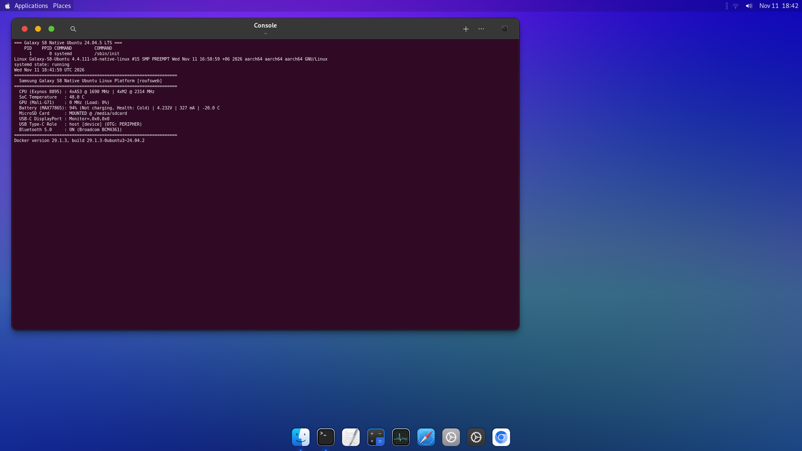
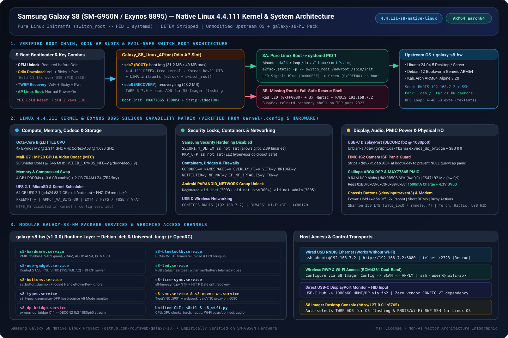
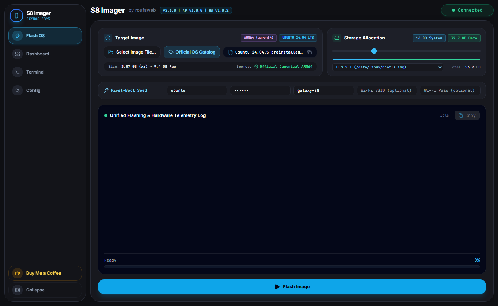
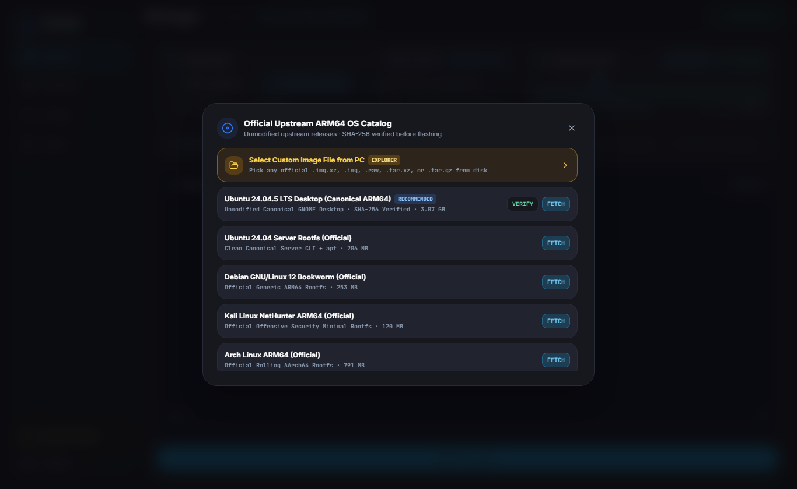
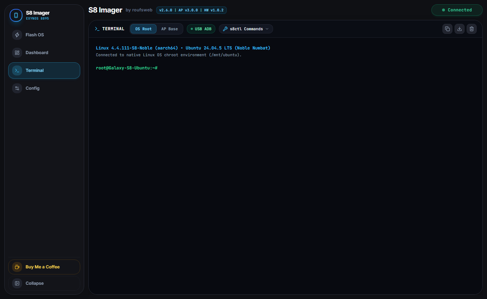
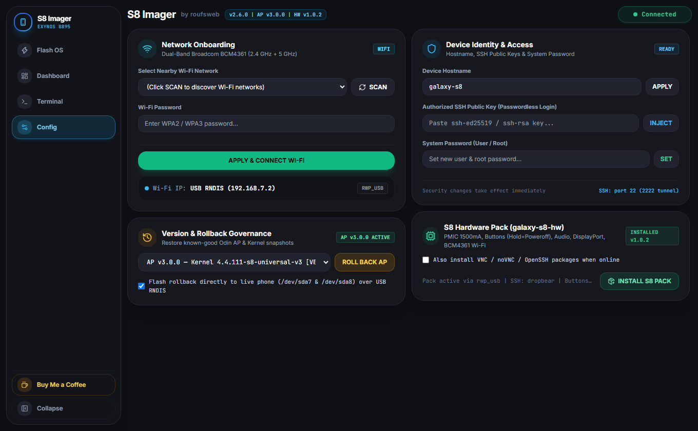
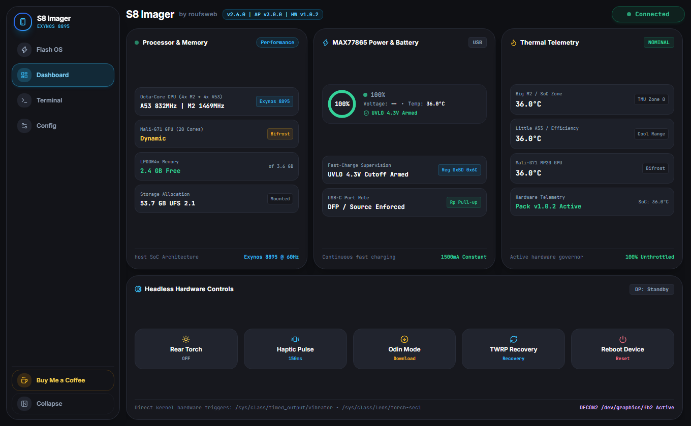
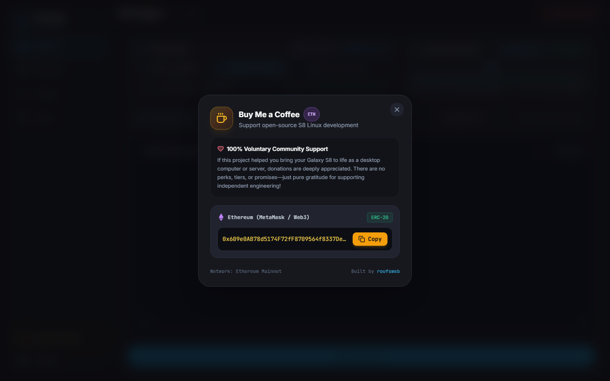

Native ARM64 Linux on Samsung Galaxy S8 (SM-G950N)
Boot unmodified upstream Ubuntu 24.04.5 LTS, Debian 12, Kali, Alpine, Arch, Home Assistant OS 18.4, or OpenWrt 23.05.5 directly via switch_root with systemd (PID 1) on Exynos 8895 silicon—including salvaged headless boards without an OLED display.
v3.0.0)
Milestone v3.0.0 ships 4.4.111-s8-universal-v3 (CONFIG_ANDROID_PARANOID_NETWORK=n, CONFIG_USB_UAS=y, panic_on_oops=0), Galaxy_S8_Linux_AP.tar v3.0.0 (61.70 MiB), S8 Imager v2.6.0 with multi-storage target selector & 1-click Version Rollback, and galaxy-s8-hw v1.0.2.

Kernel 4.4.111-s8-universal-v3 & 21-Point Hardware Capability Infographic
Compiled DEFEX-free, PARANOID_NETWORK-free, and EL2 CFP-safe (# CONFIG_RKP_CFP is not set), paired with our Universal Pure-Linux Initramfs (sda7 & sda8).

| Subsystem | Verified Config / Node | Linux Capability |
|---|---|---|
| CPU & GPU Silicon | Exynos 8895, PREEMPT=y, VA_BITS=39 | 4x Exynos M2 @ 2.314 GHz + 4x A53 @ 1.690 GHz + Mali-G71 MP20 @ 546 MHz |
| Memory & Codecs | ZRAM=y, CRYPTO_LZ4=y, VIDEO_EXYNOS_MFC=y | 4 GB LPDDR4x (~3.6 GB usable) + 2 GB LZ4 ZRAM swap + H.264/HEVC MFC (/dev/video6..9) |
| Native Permissions & glibc | SECURITY_DEFEX=n, RKP_CFP=n, ANDROID_PARANOID_NETWORK=n | Runs Ubuntu 24.04.5+ / Debian 12 (glibc 2.39) AND grants unprivileged TCP/UDP sockets to any UID (nobody, Alpine, OpenWrt, Home Assistant OS, Docker) with zero patches |
| Containers & Net | NAMESPACES, CGROUPS, OVERLAY_FS, VETH, BRIDGE, BRIDGE_NF_EBTABLES, TUN | Full Docker Engine, Home Assistant OS Supervisor, OpenWrt routing/firewall, LXC, WireGuard, iptables/ebtables |
| Storage & USB 3.1 UASP | EXT4, F2FS, FUSE, VFAT, MMC_DW, USB_UAS=y | 64 GB UFS 2.1 (sda24) + mmcblk0 MicroSD (/media/sdcard) + USB 3.1 SuperSpeed UASP SSDs (/sys/bus/usb/drivers/uas) |
| Display, Cursor & Disconnect Guard | DECON2 (/dev/graphics/fb2), panic_on_oops=0, fimc_is NULL guard | 1080p60 USB-C DisplayPort via exynos_dp_bridge (synthetic cursor + s8_dp_input_bridge USB mouse/kbd); hot-unplugging hubs or cameras never panics kernel |
| PMIC Power & Audio | CHARGER_MAX77865=y, SND_SOC_SAMSUNG_ABOX=y | Unlocks 1,500 mA fast charge + 4.3V UVLO; Calliope 9-firmware DSP + MAX98506 Speaker (hw:0,0) + CS47L92 Mic (hw:0,9) |
| Radio, USB & Sensors | BCM4361 dhd, RTL8152, AX88179, CDC_NCM, IIO=y | Dual-band 2.4/5 GHz Wi-Fi + AP mode, BT 5.0, USB RNDIS (192.168.7.2:7860), USB3 Gigabit dongles, Shannon LTE, 8x IIO sensors |
Used-Phone Prep, OEM Unlock, Button Combos & Odin AP v3.0.0 Flash
One-time preparation to install Galaxy_S8_Linux_AP.tar v3.0.0 (boot.img on sda7 + recovery.img on sda8) without wiping sda24.
1. Used Phone Check & OEM Unlock
- Confirm Model: Target hardware is Korean SM-G950N (Exynos 8895). Snapdragon (
SM-G950U/W) devices have locked bootloaders and are not supported. - Remove Prior Accounts (FRP): On a used phone, remove previous Google/Samsung accounts in Settings → Accounts or reset clean so Download Mode reads
FRP LOCK: OFF. - Enable Developer Options & OEM Unlocking: Go to Settings → About phone → Software information, tap Build number 7 times, then open Developer options and enable OEM unlocking and USB debugging.
- Missing Toggle (RMM/KG Prenormal): If a freshly wiped phone hides OEM unlocking, connect Android to Wi-Fi, run Software update → Download and install check once, then reboot back into Developer options to reveal it. (Headless boards running stock Android with ADB can use
scrcpyto toggle it visually.) - Host PC Tools: Install Samsung Android USB Drivers, Odin3 v3.14.1/v3.14.4, and download
Galaxy_S8_Linux_AP.tar(v3.0.0,64,696,320 B) from Releases.
2. Physical Button Combinations (Headless Ready)
Keep USB-C plugged into PC → hold Volume Down + Bixby + Power for 11–13s. Enters Download Mode directly (Added!! / PID_685D) with no Volume Up step required.
Hold Volume Down + Bixby + Power for 30s to drop MAX77865 power latch, release 1s, then hold all 3 buttons 11–13s to enter Odin cleanly.
sda8)
8–12 seconds
Hold Volume Up + Bixby + Power from power-off or immediately upon reset (or run adb reboot recovery / click TWRP Recovery in S8 Imager). adb devices prints recovery.
sda7) / Exit Odin
Normal / 7s
Power on normally for sda7 Linux (switch_root). Hold Volume Down + Power for 7s to exit Download Mode.
3. Flashing Galaxy_S8_Linux_AP.tar in Odin3
Odin3.exe as Administrator. Under Options, check F. Reset Time (keep Re-Partition UNCHECKED). Click AP and choose Galaxy_S8_Linux_AP.tar. Do not touch BL, CP, or CSC.
PID_685D USB endpoints suspended after Odin exits, unplug and re-plug the USB-C cable right after reboot.
adb devices → recovery) enumerates. Note: if booted normally to sda7 before flashing a distro, AP enters Fail-Safe Rescue (3x haptic + USB RNDIS 192.168.7.2 + telnet :2323).
Flashing Unmodified Distros via S8 Imager v2.6.0
Genuine upstream Canonical/Debian/Kali/Alpine/Arch/Home Assistant OS/OpenWrt images flashed onto UFS Loopback, Direct UFS Partition (sda24), MicroSD (mmcblk0), or USB 3.1 SuperSpeed SSD (sdb).
With your Galaxy S8 connected over USB RNDIS (192.168.7.2:7860) or TWRP Recovery (sda8), run Launch_S8_Imager.bat (or python desktop-app\main.py). Verify the top-right status pill shows green Connected.
Click Official OS Catalog to FETCH & VERIFY (SHA-256) Ubuntu 24.04.5 Desktop/Server/Base, Debian 12, Kali Minimal, Alpine 3.20, Arch Linux ARM, Home Assistant OS 18.4, or OpenWrt 23.05.5—or click Select Image File... for local .img.xz / .img / .tar.xz / .tar.gz files.
Choose your Storage Target (Loopback, Native sda24, MicroSD mmcblk0, or USB sdb) and drag the Storage Allocation slider (4–52 GB). Fill First-Boot Seed (Username, Password, Hostname, optional Wi-Fi).
Click Flash Image and wait for log progress to hit 100% (e2fsck -fy verified). Reboot from Dashboard → Reboot Device so sda7 executes switch_root.


Post-Flash Access, Wi-Fi, galaxy-s8-hw v1.0.2 & Version Rollback
Zero-config USB RNDIS (192.168.7.2:7860 RWP v1.0 + s8_dhcpd.py), SSH (:22), galaxy-s8-hw v1.0.2, and 1-click Version & Rollback Governance.
1. First Access Over USB RNDIS & Terminal
After booting Linux (14–20s), the phone activates a virtual USB Ethernet gadget at 192.168.7.2 with RWP agent port 7860 and SSH port 22.

2. Wi-Fi (BCM4361), Hardware Pack v1.0.2 & Rollback UI
Use S8 Imager → Config: scan & connect 2.4/5 GHz Wi-Fi, install galaxy-s8-hw v1.0.2, or roll back AP/Hardware versions in 1 click under Version & Rollback Governance.

3. Installing Device Hardware Pack (galaxy-s8-hw v1.0.2)
Adds MAX77865 1500mA+4.3V UVLO, s8_button_daemon, Calliope ABOX ALSA audio, BCM4361 Wi-Fi/BT, 2 GB LZ4 ZRAM, DisplayPort exynos_dp_bridge + s8_dp_input_bridge, and s8ctl across systemd, OpenRC, and procd.
In S8 Imager → Config, optionally tick “Also install VNC / noVNC / OpenSSH packages when online”, then click INSTALL S8 PACK. Pushes the right package automatically over RWP/SSH and marks badge INSTALLED v1.0.2.
ssh root@192.168.7.2 "dpkg -i /tmp/galaxy-s8-hw_1.0.2_arm64.deb"
# Verify: s8ctl status
ssh root@192.168.7.2 "tar -xzf /tmp/galaxy-s8-hw-1.0.2-arm64.tar.gz -C /tmp && cd /tmp/galaxy-s8-hw-1.0.2-arm64 && ./install.sh"
Hardware Controls, Chassis Button Map & End-to-End Architecture

Physical Button Daemon (s8_button_daemon)
Overrides systemd-logind single-tap poweroff via 99-s8-power.conf (HandlePowerKey=ignore) so accidental taps never drop a running server:
| Button | Timing | Action |
|---|---|---|
| Power | >= 2.5s hold | Graceful Linux poweroff + haptic |
| Power | < 450ms 2x tap | Graceful Linux reboot + double haptic |
| Power | Short tap | Display DPMS sleep/wake toggle (:1) |
| Volume +/- | Press | ALSA Master volume + 35ms haptic tick |
| Bixby | 1x / 2x / 3x | 1x: Console | 2x: Rear Torch | 3x: Re-arm DisplayPort |
| Bixby | >= 1.2s hold | Capture X11 screenshot & dispatch via Telegram |
Browse http://192.168.7.2:6080 (noVNC), click Device Screen in S8 Imager, or plug a USB-C HDMI/DP adapter (exynos_dp_bridge drives
/dev/graphics/fb2 at 1080p60). Run sudo /usr/local/bin/s8-vnc-setup.sh if VNC wasn’t installed yet.
Interactive Platform Data Flow
Click a workflow to inspect verified component boundaries across host PC, Odin/TWRP, AP Boot, and target Linux.
desktop-app/ui/index.html, api.py, flasher.py, injector.py, version_manager.py.
DEFEX-free, PARANOID_NETWORK-free, USB UAS, Calliope 9 DSP blobs, s8_usb_agentd :7860, switch_root.
/sbin/init (systemd/OpenRC/procd PID 1), RNDIS 192.168.7.2, 11 HW services, s8ctl.
MAX77865 1500mA, fb2 DisplayPort, MAX98506/CS47L92 audio, BCM4361 Wi-Fi/BT, mmcblk0 MicroSD.
Credits & Attributions
Standing on the shoulders of the mobile Linux, kernel, and open-source ARM64 community.
Abdur Rouf (github.com/roufsweb)
boerck, jcadduono, osm0sis, Jesec, Ananjaser1211, Corsicanu, Noxxxious, Ace42
Canonical Ubuntu, Debian, Kali Linux, Alpine, Arch ARM, GNOME, Vince Liuice (WhiteSur), Plank, TigerVNC, noVNC, TWRP, Magisk (topjohnwu)
Docker, CasaOS, Ollama, Code-Server, Samsung Exynos, Maxim (MAX77865 / MAX98506), Cirrus Logic, Broadcom
Buy Me a Coffee
100% Voluntary Support • Ethereum / ERC-20
If this guide helped you turn a Galaxy S8 into a working ARM64 Linux workstation or headless server, donations are gratefully appreciated. There are zero paywalls, perks, or expectations.
0x609e0AB78d5174F72fF8709564f8337DebEa5BD7
